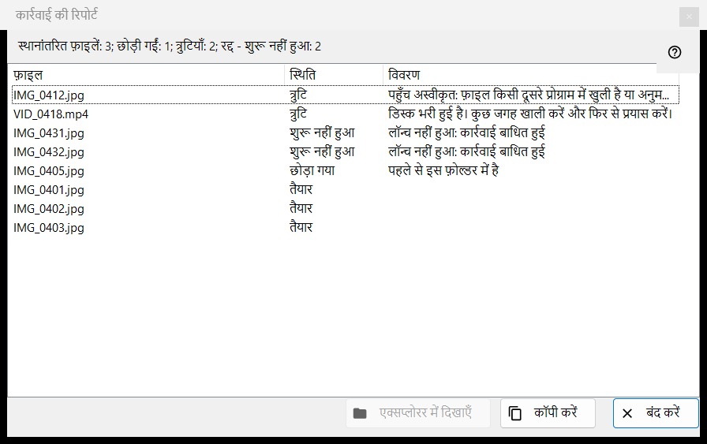
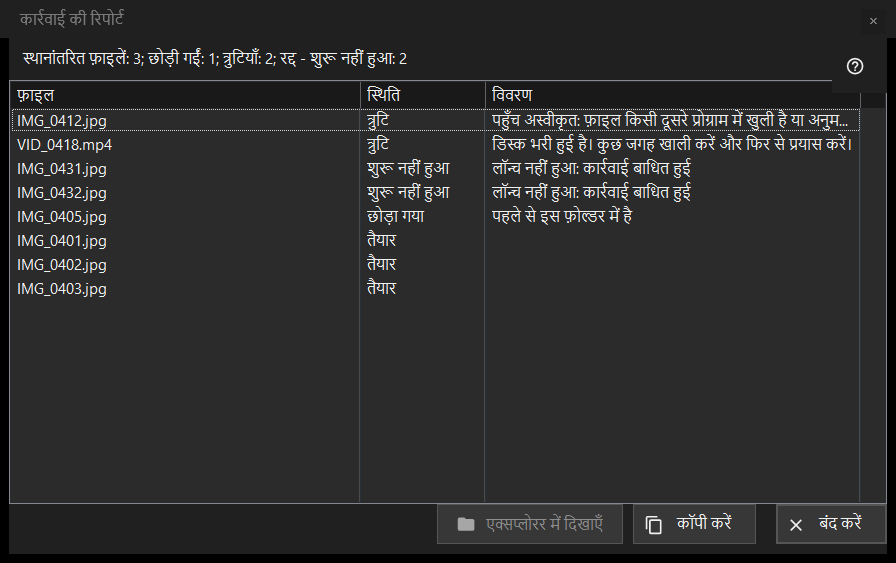

कार्रवाई की रिपोर्ट
यह किस लिए है
पिछली बैच कार्रवाई (मूव, कॉपी, डिलीट या पूर्ववत) की हर फ़ाइल के साथ क्या हुआ, और कुछ क्यों छोड़ा गया या विफल हुआ, यह सूचीबद्ध करता है। यह कभी अपने आप नहीं खुलता: रन के बाद थंबनेल पैनल (F3) के नीचे की रिपोर्ट पंक्ति पर क्लिक करें। जब रन साफ़-सुथरा नहीं होता, तो पंक्ति विवरण देखने के लिए क्लिक करें पर समाप्त होती है।


इस क्रम में
- थंबनेल पैनल में कई फ़ाइलों पर कोई कार्रवाई चलाएँ।
- पैनल के नीचे की सारांश पंक्ति पढ़ें।
- इस विंडो को खोलने के लिए पंक्ति पर क्लिक करें।
- सूची के ऊपरी भाग को देखें: विफलताएँ सबसे पहले आती हैं।
- पंक्तियाँ चुनें, फिर उनके पथ लेने के लिए कॉपी करें या फ़ाइल ढूँढने के लिए एक्सप्लोरर में दिखाएँ का उपयोग करें।
तत्व
सारांश पंक्ति
पंक्ति नतीजे से शुरू होती है: स्थानांतरित फ़ाइलें: 5, कॉपी की गई फ़ाइलें: 5, हटाई गई फ़ाइलें: 5, पुनर्स्थापित फ़ाइलें: 5 या पूर्ण कार्रवाइयाँ: 5। आगे के हिस्से, हर एक अपनी गिनती के साथ, केवल तब दिखते हैं जब गिनती शून्य न हो: छोड़ी गईं; त्रुटियाँ; पूर्ववत न होने वाली कार्रवाइयाँ; स्थायी रूप से हटाया गया, पुनर्स्थापित नहीं किया जा सकता; और, जब रन जल्दी रुक जाए, बाधित, फ़ोल्डर से कोई कनेक्शन नहीं - शुरू नहीं हुआ (लगातार तीन विफल कनेक्शन उसे रोकते हैं) या रद्द - शुरू नहीं हुआ।
सूची
कॉलम: फ़ाइल, स्थिति और विवरण। सबसे खराब पंक्तियाँ पहले आती हैं: विफल, फिर शुरू नहीं हुई, फिर छोड़ी गई, फिर पूरी हुई; समूह के भीतर फ़ाइलें रन का क्रम रखती हैं। पंक्ति का टूलटिप पूरा पथ दिखाता है। विवरण विफलता का सीधा कारण, पूरी हुई फ़ाइल के लिए गंतव्य फ़ोल्डर, पुराना नाम लिया हुआ होने पर नया नाम (नया नाम के रूप में सहेजा गया), और रीसायकल बिन को छोड़कर किए गए डिलीट के लिए स्थायी रूप से हटाया गया - पूर्ववत उपलब्ध नहीं देते हैं।
स्थितियाँ और छोड़ने के कारण
स्थितियाँ: तैयार; त्रुटि; छोड़ा गया; शुरू नहीं हुआ। छोड़ी गई फ़ाइल कारण बताती है: पहले से इस फ़ोल्डर में है; फ़ाइल अब डिस्क पर नहीं है; आर्काइव के अंदर फ़ाइलें संशोधित नहीं होती हैं; चयनित फ़ाइलों में वही नाम पहले से मौजूद है; संसाधन केवल पढ़ने के लिए है; यह वही फ़ाइल है; या गंतव्य फ़ोल्डर में नाम पहले से लिया गया है। जो फ़ाइल शुरू नहीं हुई वह बताती है: लॉन्च नहीं हुआ: कार्रवाई बाधित हुई।
एक्सप्लोरर में दिखाएँ, कॉपी, बंद
एक्सप्लोरर में दिखाएँ तब सक्षम होता है जब कोई पंक्ति चुनी हो; यह एक फ़ोल्डर विंडो खोलता है जिसमें चुनी गई पहली फ़ाइल हाइलाइट होती है, या फ़ाइल हट गई हो तो फ़ोल्डर। कॉपी करें (Ctrl+C से भी) चुनी हुई पंक्तियों के पूरे पथ क्लिपबोर्ड पर रखता है, हर पंक्ति में एक, या कुछ चुना न हो तो सभी पंक्तियों के: समस्या वाली फ़ाइलों की सूची आगे देने का आसान तरीका। बंद करें रिपोर्ट समाप्त करता है।